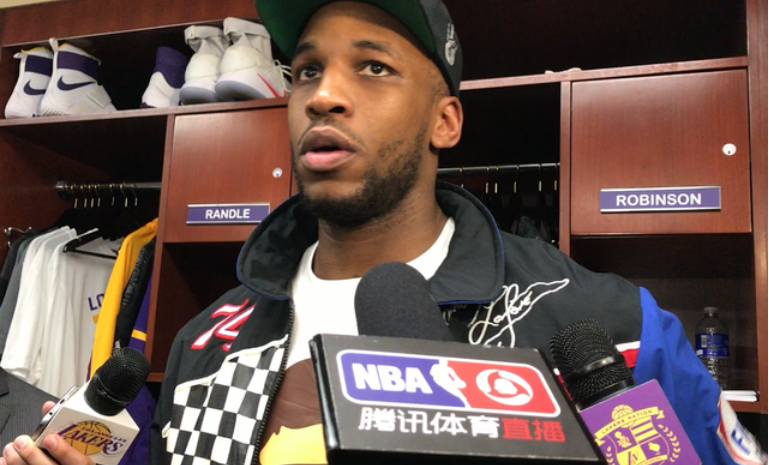

腾讯体育11月28日洛杉矶讯（记者 金磊 富裕）109-94，当全场比赛结束，斯台普斯中心喷出彩带的时候，球迷们欢呼着走出球馆。因为湖人队有一个特色，就是将对手限制在100分以下每一位在场球迷都会获得一份免费的TACO（墨西哥卷）。而今晚比赛的胜利，也使得湖人赛季横扫 老鹰 。
在缺少主力球员兰德尔和拉塞尔的情况下，湖人队开局打得并不流畅，但是今天替补阵容的出色发挥却帮助湖人在第二节反超对手，最终赢下比赛。湖人替补阵容合砍65分，反观老鹰队替补阵容只得到23分。相差42分足以说明今晚的主角是这帮板凳匪徒。对于湖人替补的表现，赛后老鹰队主角练迈克-布登霍尔泽感叹说，“他们的替补阵容今年打得非常好，如果这是今晚输球的原因，我认为我们已经预料到了。”
今年 卢克-沃顿 执教湖人队最大的特点就是第二阵容。相比于上赛季的湖人，他将克拉克森放到湖人队替补阵容，与 路易斯-威廉姆斯 搭档，两人打出的化学反应效果很显著，尤其是进攻方面。这也是为什么现在湖人队能够赢下一些强队的原因，而且比赛过程也很精彩。
在赛后媒体室里， 沃顿 谈到对于第二阵容表现，“从第二节最后几分钟防守开始，我们的替补阵容就打得很有激情，所以今晚是他们改变了比赛。我们一直在教第二阵容学习战术，但这也是我第一次看到他们五个人在球场上谈论防守。在我眼里无论首发还是替补，他们都是在 NBA 最好的球员。我觉得他们还有很大的空间提升，这就是为什么我一直试图努力不改变轮换阵容的原因。”沃顿谈到替补阵容，显得底气十足。当然除了第二阵容的表现以外，赛后还有一个人也是沃顿主动提到并且表扬的，那就是托马斯-罗宾逊。
如果按照之前兰德尔受伤，沃顿的排兵布阵很有可能是将拉里-南斯提上首发。但是他今天做了一个很大的决定就是将罗宾逊排到首发位置。罗宾逊出战15分钟，得到9分8篮板，尤其是第三节罗宾逊一直冲击老鹰队的内线，尽管他的投射能力并不好，但他依旧很努力在和对方抢篮板，争取更多的机会，确实没有辜负沃顿的期望。
对于罗宾逊的表现，沃顿说，“对于我们来说，他今晚很棒，他之前并没有很多机会，但他今晚贡献9分8篮板。所以这告诉所有人无论是谁，只要努力工作，努力训练，你就有可能把握住机会。”
而洛杉矶当地最大的媒体时代华纳对罗宾逊进行直播访问时，提及罗宾逊的职业性，靠自己努力的训练获得机会，罗宾逊则十分谦虚的回应，“说实话，我的整个职业生涯都是这样，我努力训练等待自己的名字被叫到，这就是我为自己铺出的道路。所以我会继续努力，期待上场的机会。”这番励志的话，也让人明白为什么沃顿更喜欢这样的球员，而且确实相比 易建联 ，他更适合湖人体系。